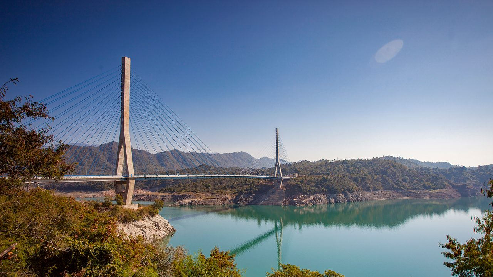

Mukteshwar Mahadev Mandir

Ranjit Sagar Dam
Pathankot is a picturesque city located in northern Punjab at the meeting point of Punjab, Himachal Pradesh, and Jammu & Kashmir. Known as the "Gateway to the Himalayas", Pathankot is celebrated for its lush forested foothills, serene rivers, and ancient legends. Key attractions include the 5,500-year-old rock-cut Mukteshwar Mahadev Mandir (associated with the Pandavas' exile), the scenic Ranjit Sagar Dam (Thein Dam) on the Ravi River, the historic Shahpurkandi Fort, and the Kathlour-Kushlian Wildlife Sanctuary.
Mukteshwar Mahadev Mandir
Ranjit Sagar Dam
From turquoise dam waters framed by mountains to ancient cave temples along the Ravi River, discover Pathankot from fresh angles.

Foothill Gateway PanoramaSweeping landscape angle highlighting the scenic meeting of Punjab plains and Himalayan hills.
Turquoise Dam Vista
High vantage angle capturing the turquoise reservoir waters and surrounding pine ridges.
Historic stone fortifications perched high on the banks of the Ravi River.
Cave Temple Riverfront Angle
Sacred rock-carved shrine entrance overlooking the flowing waters of the Ravi River.
Read experiences from travelers who visited Pathankot or share your own personal impressions and tips.
Have insights on the best drives, nature spots, or temples in Pathankot? Share below!


© 2026 Punjab Tourism. All rights reserved.